Ухаахудаг уурхайн геотехникийн аюултай бүсийн зураг
Geotechnical hazard map of UHG — 2026.10.27
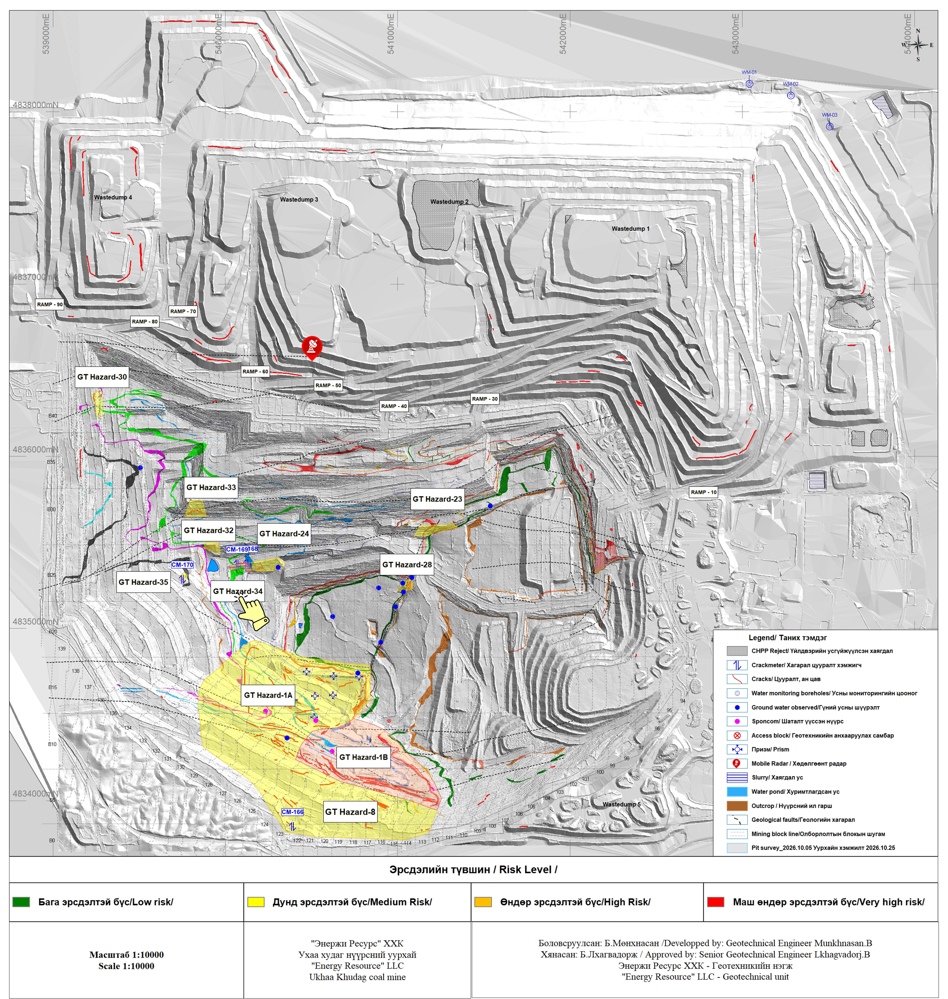
GT Hazard-8
Стрип 119-130 уурхайн баруун өндөр хананы ирмэг дагуух эрсдэлтэй бүсийг батлагдсан эрсдэлийн үнэлгээний дагуу дээрээс доош буулгах олборлолтын ажил хийгдэж байна. Урд хананы нүүрэн хэсэгт хэд хэдэн цууралт үүссэн бөгөөд хананы ирмэгээс 1–2 м зайд 120 м орчим үргэлжилсэн цууралттай. Тус хэсэгт 2 кракметр багаж байрлуулан тогтмол хэмжилт хийж байгаа ба уурхайн мастер болон геотехникийн инженер эрсдэлтэй бүсийн талбайн үзлэгийг TARP-н дагуу тогтмол үзлэг хийж ажиллана. Mining operations are currently being carried out in the risk area along the crest of the western highwall of Strip 119–130, progressing from top to bottom in accordance with the approved Risk Assessment. Several cracks have developed on the southern wall face, including a crack extending approximately 120 m at a distance of 1–2 m from the crest of the wall. Two crackmeters have been installed in the area, and regular monitoring measurements are being conducted. The Mining Supervisor and Geotechnical Engineer will conduct regular inspections of the risk area in accordance with the TARP (Trigger Action Response Plan).
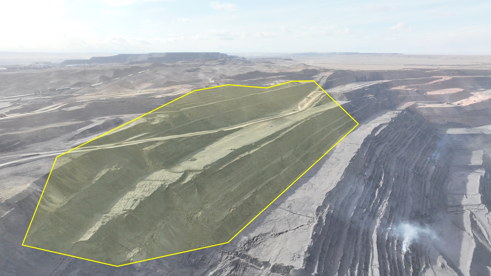
GT Hazard-1A
GT Hazard-1B хэсгийн 1440 м-ийн түвшинд үүссэн цууралт баруун тийш тэлж, улмаар урд хэсгийн 3 болон 4-р давхраасын нүүрсний дагуу цууралт үүсэж, гулсалт явагдсан. Тухайн эрсдэлтэй бүсийн цууралт баруун тийш тэлж гадарга дээр болон урд хананы нүүр хэсгүүдэд олон тооны цууралтууд үүссэн ажиглагдана. Эрсдэлтэй бүсэд 7ш призм байршуулан мониторинг хийж байгаа ба геотехникийн инженер зайнаас өдөр тутмын нүдэн үзлэг болон дроны төлөвлөгөөт үзлэгээр тогтмол хяналт тавьж ажиллаж байна. At the GT Hazard-1B area, the tension crack that developed at the 1440 m elevation has propagated westward, subsequently resulting in cracking and slope failure along the 3 and 4 coal seams in the southern area. The cracks within the affected area have continued to propagate westward, with multiple cracks observed on the ground surface and along the face of the southern wall. A total of seven prisms have been installed within the hazard zone for ongoing monitoring. The Geotechnical Engineer conducts regular monitoring through daily remote visual inspections and scheduled drone surveys to assess ground conditions and identify any further signs of deformation or instability.
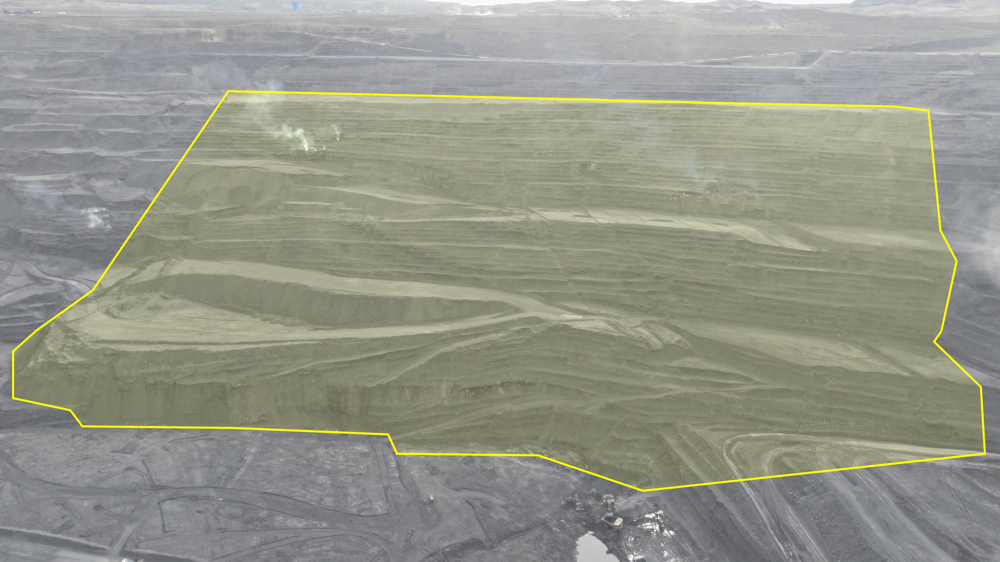
GT Hazard-1B
2023.09.01-ний өдөр уурхайн GT Hazard-1B аюултай бүсийн 1440 м-ийн түвшинд цууралт үүссэн. Үүссэн цууралт баруун чиглэлд тэлж, уурхайн урд хэсгийн 0С нүүрсний давхраасын дагуу гулсалт үүссэн. Одоогийн байдлаар эрсдэлтэй бүсийн гадарга дээр олон тооны хагарал цууралттай бөгөөд аюултай бүсийн хүрээнд үүссэн хагарал, цууралт дээр геотехникийн мониторингийн багаж хэрэгсэл байрлуулах боломжгүй. Аюултай бүсийн хүрээнд хүн болон техник нэвтрэхийг хориглосон ба геотехникийн инженер зайнаас өдөр тутмын нүдэн үзлэг болон дроны төлөвлөгөөт үзлэгээр тогтмол хяналт тавьж ажиллаж байна. On 1 September 2023, a tension crack developed at the 1440 m elevation within the GT Hazard-1B hazard zone. The crack subsequently propagated westward, resulting in a slope failure along the 0C coal seam in the southern part of the mine. Currently, multiple cracks and tension cracks are present on the ground surface within the affected area. Due to the unstable ground conditions, installation of geotechnical monitoring instruments on or in the immediate vicinity of the existing cracks within the hazard zone is not feasible. Access by personnel and mobile equipment is prohibited within the designated hazard zone. The area is regularly monitored remotely by the Geotechnical Engineer through daily visual inspections and scheduled drone surveys to assess ground conditions and identify any further signs of deformation or instability.
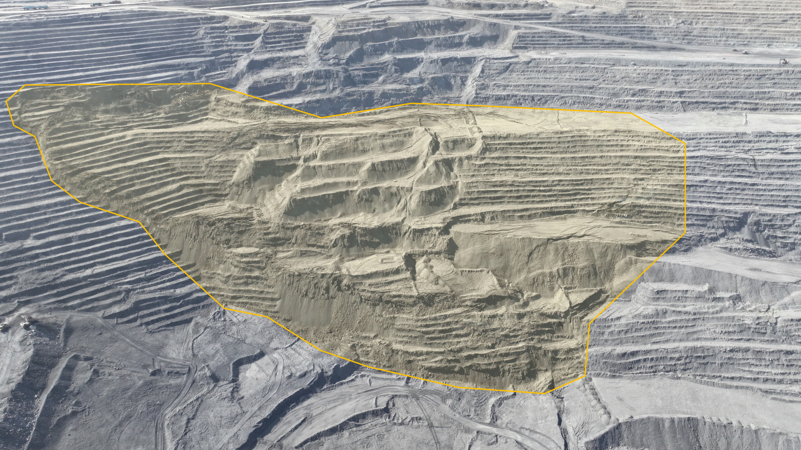
GT Hazard-23
1402-н түвшин, стрип#133-114 25-ийн налуу замын доод хажуугийн хэврэг материал OCUU нүүрсний тааз дээр гулсаж нуралт үүссэн. Нуралт үүссэн мөргөцгийн өндөр 12м, 81м урт үргэлжлэх ба 1м орчим доош суулт үүссэн. Эрсдэл бүхий талбайн үзлэгийг "TARP"-ын дагуу тогтмол хийх, тухайн эрсдэлтэй бүсэд ойр ажиллах тохиолдолд JHA хийж ажиллах. At the 1402 level, strip #133-114, a slope failure occurred on the lower side of the 25-ramp due to sliding of loose material from the OCUU coal seam roof. The slope failure measured 12m in height, extended 81m in length, and experienced approximately 1m of subsidence. Regular TARP monitoring and inspection are required, and perform JHA when working near a hazard area.
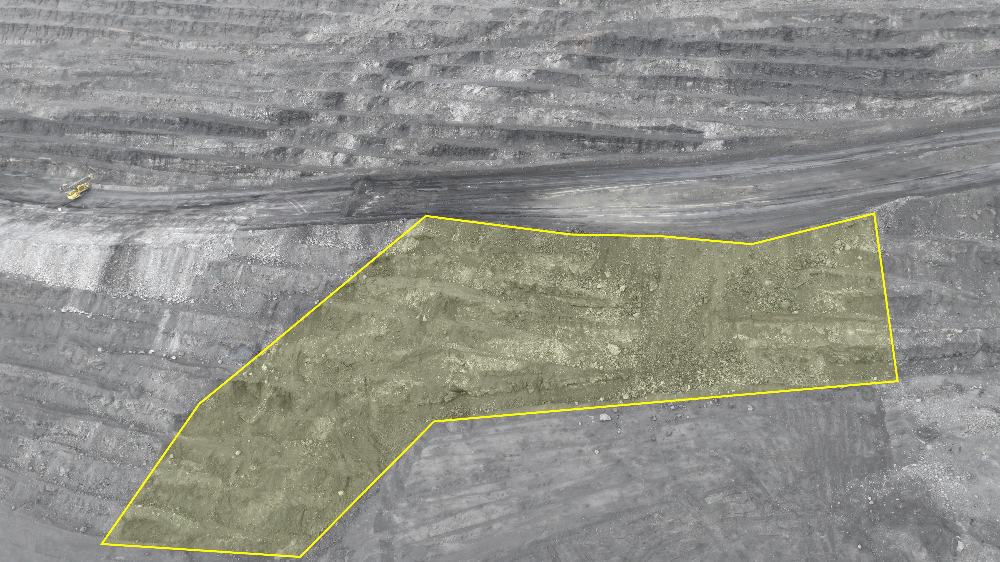
GT Hazard-24
1280-н түвшин, strip#128 хойд хэсэгт тээврийн замын хажуугийн нүүрэн талд цууралт үүсэж, 3А нүүрсний үелэл хоорондын материалд суулт явагдсан. Цууралт үүссэн хананы өндөр 30м, урт нь 40м үргэлжилнэ. Эрсдэл бүхий талбайн үзлэгийг "TARP"-ын дагуу тогтмол хийх. Тухайн бүсийн доор хүн болон техник ажиллах тохиолдолд JHA хийж ажиллах шаардлагатай. At the 1280 level, on the northern side of strip #128, a crack developed on the exposed face adjacent to the ramp, accompanied by sliding in the interburden material between the 3A coal seams. The wall with the crack extends 30 meters in height and 40 meters in length. Regular TARP monitoring and inspection are required, and JHA should be performed when working near the hazard area.
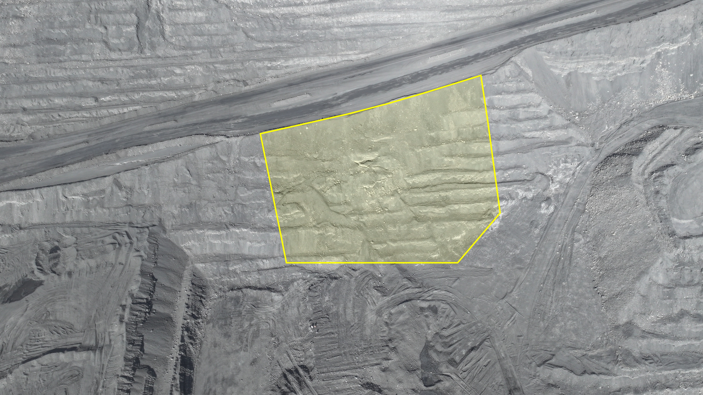
GT Hazard-28
1343.7-н түвшин, strip#117, хананы ирмэг дагуу геологийн хагаралын нөлөөгөөр ан цавын хавтгайд параллель цууралтууд үүсэж тэлэлт явагдсан. Цууралтууд үүссэн хананы өндөр 32 метр өндөртэй, цууралт нь 45-60 м урт үргэлжлэх ба 8 см тэлж, ирмэгээс 15м зайд байрлана. Эрсдэл бүхий талбайн үзлэгийг "TARP"-ын дагуу тогтмол хийх, тухайн эрсдэлтэй бүсэд ойр ажиллах тохиолдолд JHA хийж ажиллах. Шинээр ирмэг дагуу хагарал, цууралт үүсэх, гулсалт нуралт ажиглагдах буюу тогтворгүй нөхцөл байдал үүсэх тохиолдолд геотехникийн инженерт яаралтай мэдэгдэж шалгуулах шаардлагатай. At level 1343.7 in strip #117, parallel cracks have developed along the joint plane near the pit crest due to the influence of a geological fault, accompanied by progressive opening. The wall where the cracks have developed is approximately 32 meters in height, with the cracking extending 45–60 meters in length and showing about 8 cm of opening. These cracks are located at distances of up to 15 meters from the crest Regular TARP monitoring and inspection are required, and perform JHA when working near a hazard area. If any movement is observed or an unfamiliar crack and existing crack opening are observed along the edge, or landslide, confirm that the geotechnical engineer has been informed.
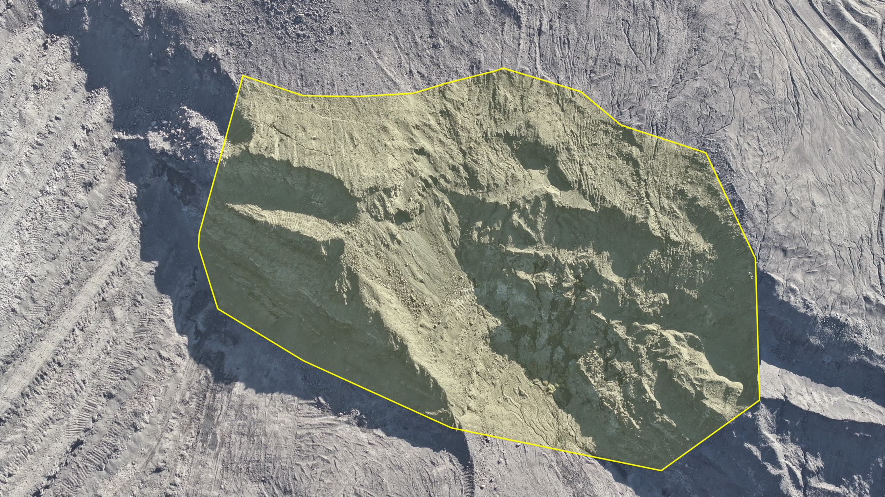
GT Hazard-30
2026.06.28-ны өдөр орсон борооны улмаас Стрип#136 хэсэгт өмнө бүртгэгдсэн байсан цууралтад хөдөлгөөн орж, шаварлаг материалаар дүүргэгдсэн ан цавын дагуу гулсалт явагдсан. Гулсалт үүссэн хажуугийн өндөр 20м бөгөөд хойд хэсэгт 1498-н түвшинд ирмэг дагуу цууралт үүссэн. Эрсдэл бүхий талбайн үзлэгийг "TARP"-ын дагуу тогтмол хийх. Цууралттай хэсгийн доод тээврийн замын хамгаалалтын хөмсгийг өндөрлөх. Шинээр ирмэг дагуу хагарал, цууралт үүсэх, гулсалт нуралт ажиглагдах буюу тогтворгүй нөхцөл байдал үүсэх тохиолдолд геотехникийн инженерт яаралтай мэдэгдэж шалгуулах шаардлагатай. The heavy rainfall event on 28 June 2026 reactivated the previously identified crack at Strip #136, resulting in sliding along a clay-filled discontinuity plane. The slide has a vertical height of approximately 20 m, and tension cracks have developed along the crest on the northern side at the RL 1498 elevation. Regular monitoring and inspection are required, and perform JHA when working near a hazard area. The safety bund on the lower haul road below the cracked zone must be raised. If any movement is observed or an unfamiliar crack and existing crack opening are observed along the crest, or landslide, confirm that the geotechnical engineer has been informed.
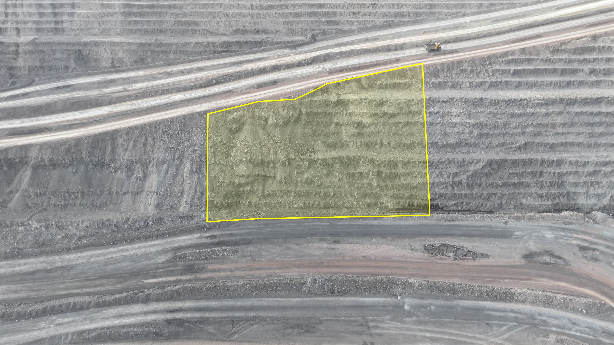
GT Hazard-32
2026.08.10 өдөр уурхайн хойд ханын 1317-н түвшин, стрип#132 хэсэгт цууралт үүсэн ба 4С нүүрсийг 20м уллаж олборлох явцад хойд хана тал дахин цууралт үүсэн. Эрсдэл бүхий талбайн үзлэгийг "TARP"-ын дагуу тогтмол хийх, тухайн эрсдэлтэй бүсэд ойр ажиллах тохиолдолд JHA хийж ажиллах. On 10 August 2026, at Level 1317, Strip #132 on the northern wall of the open pit, a new crack developed along the haul road crest on a vertical joint plane oriented toward the pit, following blast. Regular TARP monitoring and inspection are required, and perform JHA when working near a hazard area.
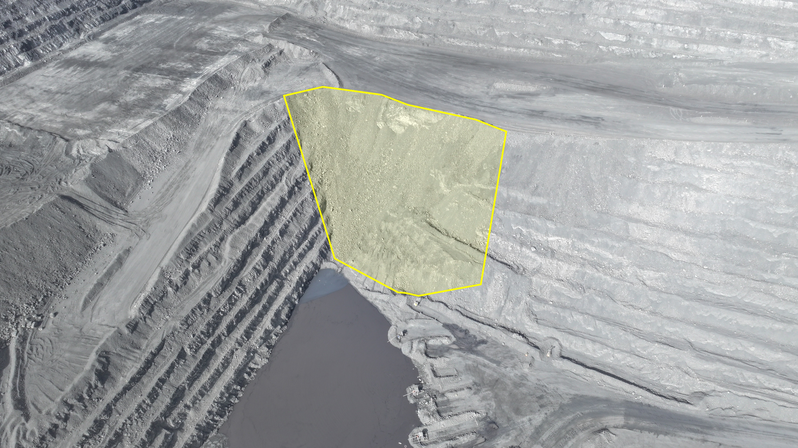
GT Hazard-33
1350-н түвшин, стрип#132-133 хэсгийн хойд хананд уурхай руу чиглэсэн босоо ан цавын хавтгайн дагуу гулсалт явагдсан. Гулсалт үүссэн хажуугийн өндөр 16 м бөгөөд гулсалт нийт 80 м орчим урттайгаар үргэлжилсэн байна. Эрсдэл бүхий талбайн үзлэгийг "TARP"-ын дагуу тогтмол хийх, тухайн эрсдэлтэй бүсэд ойр ажиллах тохиолдолд JHA хийж ажиллах. Гулсалтын доод хязгаараас 10-15 метр зайд 2м өндөртэй хамгаалалтын хөмсгийг байрлуулах шаардлагатай. Шинээр ирмэг дагуу хагарал, цууралт үүсэх, гулсалт нуралт ажиглагдах буюу тогтворгүй нөхцөл байдал үүсэх тохиолдолд геотехникийн инженерт яаралтай мэдэгдэж шалгуулах шаардлагатай. At the 1350 m elevation in the Strip 132–133 area, a slope failure occurred along a near-vertical joint plane dipping toward the mine on the northern wall. The failed slope was approximately 16 m high, and the failure extended for approximately 80 m along the wall. Regular inspections of the hazardous area shall be conducted in accordance with the TARP (Trigger Action Response Plan). If work is required in close proximity to the identified hazard zone, a Job Hazard Analysis (JHA) shall be completed prior to commencing work. A 2 m-high safety berm shall be constructed 10–15 m from the lower limit of the failed area. If new cracks or tension cracks develop along the crest, or if further slope movement, failure, or other signs of instability are observed, the Geotechnical Engineer shall be notified immediately for inspection and assessment.
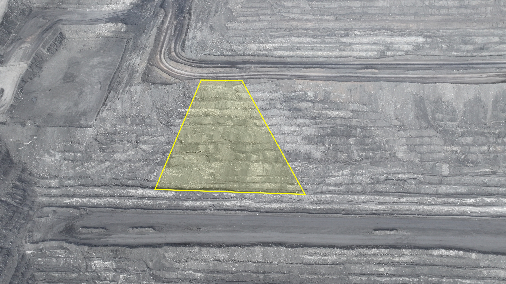
GT Hazard-35
1350-н түвшин, стрип#133-134 EX8101 -н технологийн зам дээр Shot_3618 дугаартай тэсэлгээний нөлөөгөөр 6 давхраасын нүүрс дээр шилжилт явагдаж цууралт үүссэн байна. Эрсдэл бүхий талбайн үзлэгийг "TARP"-ын дагуу тогтмол хийх, тухайн эрсдэлтэй бүсэд ойр ажиллах тохиолдолд JHA хийж ажиллах. Шинээр ирмэг дагуу хагарал, цууралт үүсэх, гулсалт нуралт ажиглагдах буюу тогтворгүй нөхцөл байдал үүсэх тохиолдолд геотехникийн инженерт яаралтай мэдэгдэж шалгуулах шаардлагатай. At the 1350 m elevation in the Strip 133–13 area, Shot_3618 blast, ground movement occurred along Coal Seam 6 near the EX8101 haul road, resulting in cracking. Regular inspections of the hazardous area shall be conducted in accordance with the TARP (Trigger Action Response Plan). If work is required in close proximity to the identified hazard zone, a Job Hazard Analysis (JHA) shall be completed prior to commencing work. If new cracks or tension cracks develop along the crest, or if further slope movement, failure, or other signs of instability are observed, the Geotechnical Engineer shall be notified immediately for inspection and assessment.
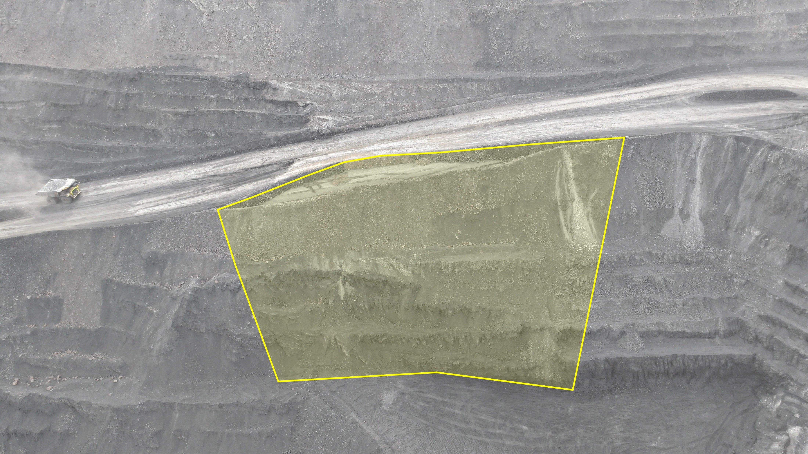
GT Hazard-34
1284-н түвшин, стрип#130-131 хэсэгт 4A нүүрсний давхрааст гулсалт явагдаж тээврийн замын ирмэг дагуу шинээр цууралт үүсэж суулт өгсөн. Цууралт үүссэн мөргөцгийн өндөр 12 м ба цууралт нь ирмэгээсээ 5-10 м зайд, 90 м урт үргэлжилсэн бөгөөд 10см орчим суулт явагдсан. Одоогоор шилжилт хөдөлгөөн явагдаж байгаа бөгөөд 2 кракметр багаж байршуулан мониторинг хийж байна. Цууралт үүссэн хэсгийг аюулгүй болгох хүртэл доод түвшинд олборлолт хийхгүй байх. Шинээр ирмэг дагуу хагарал, цууралт үүсэх, гулсалт нуралт ажиглагдах буюу тогтворгүй нөхцөл байдал үүссэн тохиолдолд геотехникийн инженерт яаралтай мэдэгдэж шалгуулах шаардлагатай. At RL 1284 m, Strip #130–131, sliding occurred along the 4A coal seam, resulting in the development of new cracks and ground settlement along the haul road crest. The bench height is 12 m. The crack extends approximately 90 m along the slope, located 5–10 m from the crest, with approximately 10 cm of settlement observed. Ground movement is currently ongoing, and two crackmeters have been installed to monitor crack displacement. /Must not operate the down elevations until the cracks start to safe. If any movement is observed or an unfamiliar crack and existing crack opening are observed along the crest, or landside, confirm that the geotechnical engineer has been informed
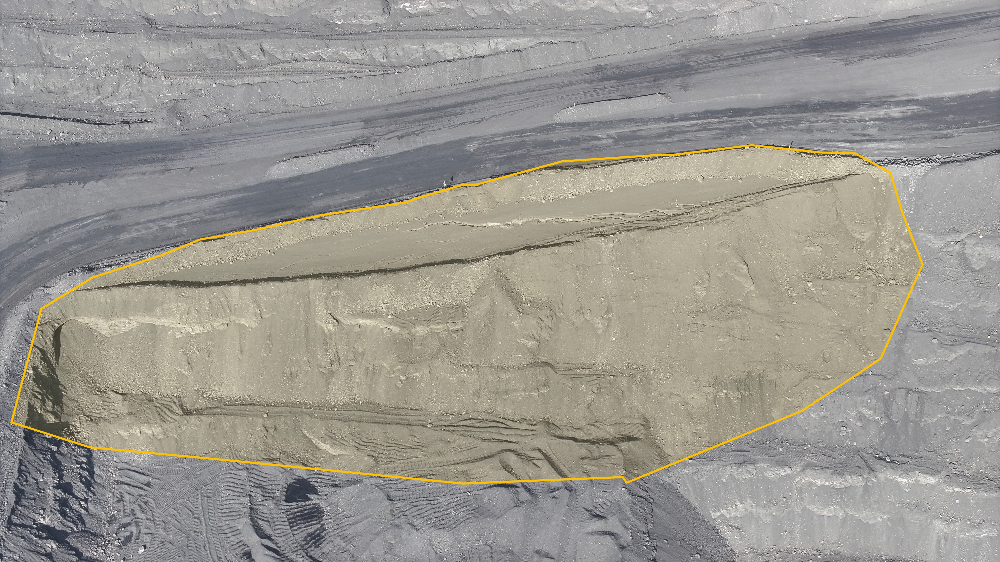